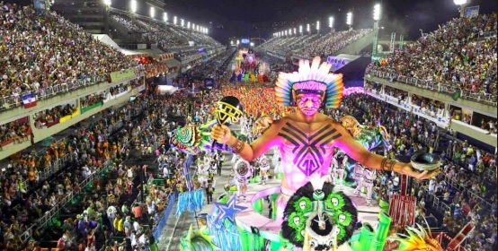
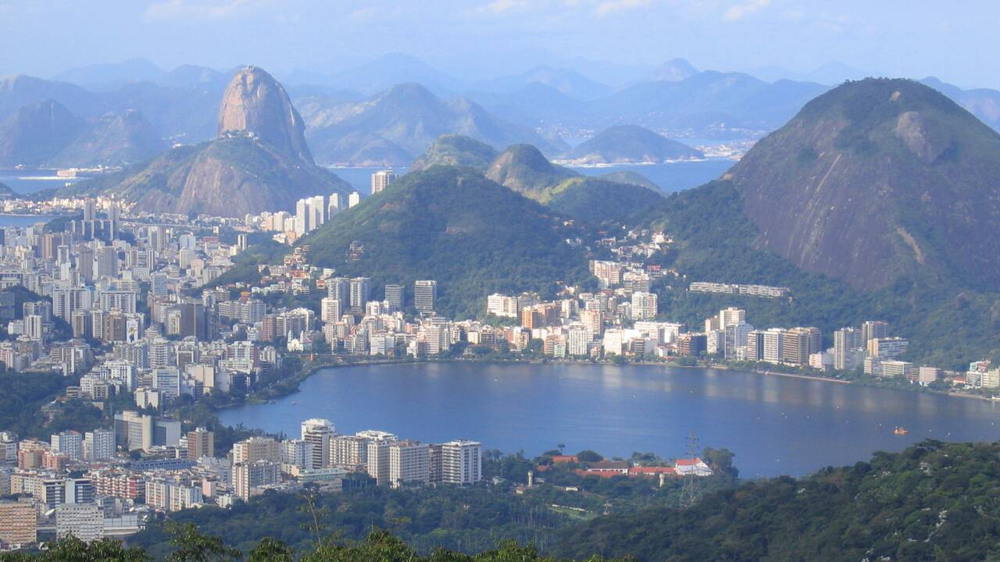

Fondée en 1565, Rio de Janeiro a été la deuxième capitale du Brésil, ayant été remplacée lors de la construction de Brasília, inaugurée en 1960. La ville merveilleuse, comme elle est connue mondialement, est la deuxième métropole du pays, avec environ 6 100 000 habitants (environ 12 600 000 dans l’agglomération). Rio est la capitale de l’état de même nom. Les habitants de la ville sont appelés Cariocas et les habitants de l’état sont appelés Fluminenses. Quand on pense à Rio, quelques images nous viennent en tête : le Carnaval, la samba, les plages, le Pain de Sucre, le Christ rédempteur et les favelas. Il faut avouer que la ville, ainsi que tant d’autres villes au monde, vit de graves problèmes sociaux et de criminalité, mais ce n’est pas une raison de l’éliminer de votre liste de voyages. Il suffit de faire attention et tout se passera bien. Je n’écrirai toutefois pas un article sur la violence à Rio, car il y en a plusieurs sur Internet. Je vais me concentrer sur les attraits de cette ville, qui mérite vraiment d’être visitée au moins une fois dans la vie. Voici pourquoi, en 10 raisons!
Cet immense rocher de 395 mètres est un des symboles de la ville. Vous pouvez monter en téléphérique à partir de la base du mont Babilônia, faire une petite escale au mont d’Urca, à 220 mètres et finalement atteindre le mont du Pain de Sucre. Les cabines ont une capacité de 65 personnes et sont toutes vitrées, ce qui nous donne une vue surprenante. L’endroit est très fréquenté par les amateurs d’escalade. La vue au sommet du Pain de Sucre ne vous laissera pas indifférent.

Une des nouvelles merveilles du monde, la statue de 38 mètres (dont 30 pour la statue et 8 pour le piédestal) est au sommet du mont Corcovado, à une altitude de 710 mètres. La construction a commencé en 1926 et s’est terminée en 1931. La ligne du train touristique du Corcovado existe toutefois depuis 1884. Pour aller visiter le monument, il y a un service de vans et aussi un joli train qui sillonne la montagne. La meilleure astuce est y arriver le plus tôt possible et monter dans le premier train, car le monument est fort achalandé. Prendre un simple selfie peut s’avérer un vrai défi. s
 st
st
Les trois plages les plus célèbres de la ville sont Copacabana, Ipanema et Leblon, mais il y en a plusieurs d’autres, pour tous les goûts : relaxer, faire du surf, jouer au « footvolley », un mélange de soccer et volley de plage… ce sont 36 km de plaisir!
Souvent les plages de la ville sont séparées par secteurs, appelés « postos ». Cela aide les habitants et les visiteurs à se situer. Les postos peuvent être situés à environ 1 km les uns des autres.
Les plages de Copacabana et Leme ont 6 km de longueur. Il y a plusieurs hôtels dans cette région, qui est une des préférées des touristes. Le prestigieux hôtel Copacabana Palace, inauguré en 1923, est situé face à la plage, entre les « postos » 2 et 3.
Le trottoir de Copacabana, avec ses mosaïques en forme de vagues, est très connu mondialement.

Les amateurs de soccer pourront faire une visite guidée de ce géant du soccer ou aller voir un match, pour sentir de près l’émotion qui est partagée aux quatre coins du pays.
Le Carnaval de Rio est considéré la plus grande fête au monde. À l’époque du Carnaval, en plus des défilés des écoles de samba, il y a plusieurs festivités de rue, et ce, pendant presque une semaine. La joie de vivre fait partie de l’âme de cette ville. Bien que le Carnaval n’ait lieu qu’une fois par année, les habitants aiment faire la fête.
Rio est une ville riche en histoire et est aussi très bohème. Ces deux quartiers sont célèbres pour ses restaurants et ses bars.

La ville de Rio possède de la plus grande forêt urbaine du monde. La « Forêt de Tijuca ». Le mélange mer-montagne-forêt est quelque chose de merveilleux et difficile à trouver ailleurs. Il faut le voir!
